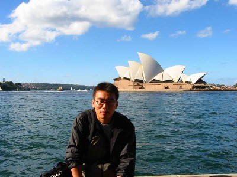
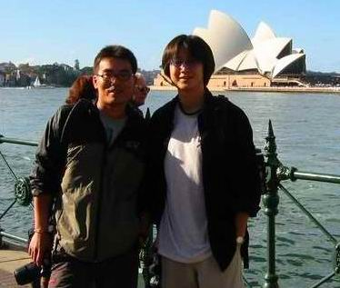

Archives : 2003-06
收到你的信，仔细看过了 @ Jun 30, 2003
最近有计划租用一个自己的网络空间，收到你好意帮助我的信，谢谢！
你在信里说：“有时候我觉得，你像一朵美丽但是没有根的花。艳丽但是有点凄凉。找一个地方生根， 这样可以每年都开花，哪怕没有以前开的美丽。抛开身边那些烦扰你的人吧。看似美丽的东西未必真实。”
嗨，谢谢你的忠告！
莲花的回忆 @ Jun 29, 2003

back from taihu by bike @ Jun 27, 2003
Wang jianshou completed his trip to Taihu by bike today, covering 147 km in distance. Here is the actual route as follows:
这一场烟花的表演 @ Jun 19, 2003
很幸运,我曾经的和现在的男友都不是长袖飞舞的表演者,他们不会说世上最动听的甜言蜜语,也不会点燃绚丽然而短命的烟花，在他们之前我不知感情的伤害是什么滋味，于爱情上我有颗勇敢的心。
很幸运，他们现实但不世俗，他们不会世俗的数落我的不是且拿他们的优秀来作比较，不会世俗地炫耀他们的教育、工作能力以及收入，更不会世俗地评判周围的人和事... ...他们低调而宽容的对待整个世界。
很幸运，他们没有许我一个梦，然后用谎言来填补空心。很幸运，遇见他们我还能拥有高龄下的少女情怀。
不爱看长袖飞舞，那是他人擅长的游戏。
谢谢这场烟花的表演，我成长了虽然伴随着巨痛，可知道自己还是幸运的。
送首莫文慰的《电台情歌》
星期天党团员活动 @ Jun 17, 2003
星期天早晨7:30分在南京玄武湖开始我们这个党支部活动，同时还有我们这个部门的团员青年参加。去那么早为了在太阳不太辣的时候进行划船活动，上一次在玄武湖划船还是和Sherry和Jiajialing。
在玄武湖的活动中，最令人难忘的是我们十来个年轻人一起玩玄武湖少得可怜的GAME，图解如下：

碰碰车——许多年前玩过，十来个人一起玩浓浓的快乐气氛掩盖了碰碰车场地的寒酸。我为自己的驾驶技术而得意，更为旋转躲避冲撞的体验而陶醉，况且身边坐着个酷酷的山东汉子。嗨！若不是自己有驾驶天赋就是超水平发挥。

海盗船——同事中有两个彪型大汉不愿玩海盗船，被我们拖着上去。大家大呼小叫的做着游戏前的准备，想象着有可能出现的危险，仿佛相互谈论的不是危险而是什么玩笑，这个游戏的乐趣或许就是在危险中想象出刺激来。海盗船开始荡悠，荡悠到90度时有人还能尖叫，荡悠到180 度时，我看见坐在对面的男同事头朝下，恐惧的嘴巴里往下滴着不受控制的口水，以及硬币从某人口袋里掉出来唏呖哗啦的声音，和我一个办公室为添砖加瓦（买房子）产生储蓄快感的男同事讲当他听见硬币的声音时，赶紧捂住口袋里那几百元现钞...180 度比90度的海盗船要安静了许多，呵呵~~

激流勇进——看看图片就知道怎么玩的，有个同事给这个游戏一个经典的总结：“滑下第一个坡是为了让你知道滑下一个大坡时，记着闭上嘴巴。呵呵~~~这个坐在前面的家伙会不会喝了很多水？？？无意中说出一句哲学。

疯狂迪斯科——一个大炒锅似的圆盘，四周的栏杆上有许多带子是起身体平衡作用的，音乐响起，炒锅开始炒豆子，呵呵~~
午饭——在湖南路的狮王府，大家进餐速度比较快，那天谁点的菜？那么可口！
下午十来个年轻人在Amigo卡拉永远OK来着，哦，也是好久没唱歌了，以前喜欢点很多歌去唱，好似歌霸。现在则喜欢听别人唱。那天发现平时不苟言笑的人也挺活泼可爱的，或许本就活泼可爱只是很少有机会闪烁罢了。

今天在公司和同事讨论，什么时候自己组织去苏州乐园玩，我从来没去过那里，听说人很多，需要排队。这类GAME最好还是人多一起玩，有气氛的说！
游紫霞湖 @ Jun 15, 2003
下午乘朋友新买两个月的SONATA车去了紫霞湖,那里游泳的人可真多，私家车也很多，停车费8元/无限期。前男友在20天前买了部香槟色MAZDA 6，价格在人民币26万，另一个朋友也很喜欢M6，打算明年看看。2003年1月21日MAZDA 6在长春隆重下线，同时M6全新网站http://www.faw-mazda.com 也正式开通。
据说南京SONATA销售达600辆，韩国产品历来都以低价位竞争，而朋友买的这部车加上一些费用在人民币25万左右，中国买一辆车的价格可以在美国买两辆相同的车了。SONATA的电视广告有力挽狂澜的含义在里面，挺不错的广告创意，不过我不太喜欢韩国车。而且我认为SONATA在中国市场的卖价偏高。
《金粉世家》片尾歌《让她降落》 @ Jun 13, 2003
《让她降落》.MP3
她没有焰火绚丽
也不象鸟儿会迁徙
不过是放飞的风筝
怕你心痛才自由
记忆的线索在你手中
如果你能让她降落
天空如自由无尽头
宁愿是条船如果你是大海
就让她能漂流在你心中
这世间繁华太多
人影交错擦肩而过
她走过惟独她走过
让你停下了脚步
沉默两颗心不再沉默
如果你能让她降落
天空如自由无尽头
可知那颗心在风中太落寞
就让她停留在你怀中
宁愿是条船如果你是大海
至少让她降落在你怀中
JIAJIA在悉尼的消息 @ Jun 12, 2003
jiajia说他的宿舍在悉尼最市中心的位置，蓝色的房间墙壁，吊扇，房间比较干净，有点浪漫的越南味道，呵呵~~~晚饭自己烧了两个菜，开学认识了两个亚洲新朋友，从国内带去的手机在澳洲能用，那里的号码是#￥%%*……保密哦！

剃了小平头的JIAJIA

HANK和JIAJIA在悉尼，HANK的头发长到那么长了？
记录星期六 @ Jun 08, 2003
午饭后和老妈一起看我出生前后的家庭黑白照片，边看妈妈边对我讲解照片的故事...有意思。那些照片虽看过很多遍，可我每每翻起都会感概岁月无情。外婆78岁因为肺癌去世，老年外婆满脸皱纹，几乎没有皮下脂肪，患过白内障，戴着厚重的眼镜。可影集里的外婆年轻、有气质，旧时城市摩登女子的打扮，影集将人生一下子浓缩在几张照片里，看的人不得不受启发。
下午看碟片《低俗小说》看了一半，跑去逛中山电子城。以前买的电子用品比如：手机、数码相机，以及28岁生日礼物CD机，不经意都是SONY，这次计划买的数码摄象机也就刻意选择SONY品牌。货架上的SONY DV机品种不多，只有五款样品。从质量上考虑我希望选择日产的，其次像素高低不作考虑范围（已有数码相机），价格在RMB8000元左右可以接受。真正影响我选择的因素是造型和表面颜色处理，往往忽略功能，这几乎是所有女性都会犯的错。五款中有两款比较喜欢，一款是SONY DCR TRV 33E，另一款是SONY DCR-PC105E。DCR TRV 33E网上报价比今天我寻的价格要便宜两百多元，我认为33E的性价比比105E的要好些。
路过凡谷子中装店，订做了一件白色暗花的中式上装。里面都是些中式家装家饰品，小到首饰挂件大到衣柜桌子，其间琳琅满目挂着色彩缤纷的旗袍及中装，颇有味道。


SARS之后第一次去五台山健身会馆游泳，拼命地在更衣室照镜子，穿上泳衣照，脱了泳衣也照，洗澡前照，洗澡后也照，还是觉得瘦了！！！有点着急，羡慕健身房里脂肪堆积的女同胞。不明白人们为什么总提倡身材苗条，媒体上的文字图片无不做着这种倾向的宣传。而且中国女性穿衣服普遍羞于突出“性”。这里我要说实话，那些穿着衣服看上去有“点”胖的女子，裸体时视觉感受非常好，健身会馆更衣室里这样的例子比比皆是，看得人羡慕到伤心啊！希望自己的体重能从目前的94斤增加到105斤左右。神啊！救救我这个可怜的瘦子吧，瘦子比胖子更加苦恼！

—会馆前厅多了些色彩
晚上给果果洗澡，小家伙很听话的。只要听见我的声音就会来找我，前后跟着我转，嘴巴里发出咕噜咕噜的声音，好象要说话似的。她是我们家睡觉打呼最响的一个，每个房间都能听见她打呼的声音。洗了澡，带她出去遛，发现小区的通道重新铺了柏油，很平整也很干净的呈现在路灯下，只有我和果果走在笔直的小路上，很惬意！不知道是流浪过还是生过孩子的原因，果果比其他的狗显得更加通人性。原先刚来我家时抢食护食，饭量比较大，渐渐地饭量小了，也不去抢小小的东西吃。自从毛被剃了之后，许多路人看见她以为是只小羊羔，呵呵~~基本上每隔两三天我就给她洗一次澡，身上的虫子是消灭了。等果果的毛长长之后，一定还是个可爱的MM。
Jiajialing,一路平安! @ Jun 07, 2003
下过雨的夜晚有点凉，9点约了Sherry和jiajialing在新杂志咖啡店见面，明天Jiajialing就要起程去澳洲留学,天晓得除了他老妈还会有谁最舍不得他走？SIGH~~
最近他也建了个网页，目前暂用http://blog.jiajialing.net。去了那边别忘记经常更新网页。
jiajia祝愿你平安、快乐、健康...剩下的一切尽在不言中，愿水晶手链给我们三个人都代来好运。让羽泉这首Good Bye作为我们的告别之曲。

Cool Way to Make New Friends @ Jun 04, 2003
this is a cool way to make new friends and meet friends of friends!
Please sign up and post your picture!

You will soon be able to use Friendster to meet people through your friends, or help your friends meet new people.
If you have not already done so, please complete your profile and upload a picture.
To use Friendster to connect to people through networks of friends,you will need to add friends to your Friendster personal network.You cannot connect to anyone until you have people in your friends list.
You can search for existing Friendster users by email address,using User Search. If your friends are not Friendster members yet,invite them to join with the Invite feature.
Once you have added some friends, try the Gallery to see your personal network of all the people connected to you.
Create your own personal and private community, where you can interact with people who are connected to you through networks of mutual friends. It’s easy and fun!
一个冗长的梦 @ Jun 03, 2003
昨晚做了个梦。
梦中太多的内容挤压着脑袋。有关梦的故事是这样的：我们公司总经理挑选了一些人去前线打仗，那些年轻的面孔中也有我。屋子里爬满各种各样恐怖的蛇、虫子，地上有只章鱼企图用它长长的触角捉住我，路边杂技团里集体练功的狗...我极其恐惧地躲避那些生物，不知道到什么地方去？途中发现自己忘带手机充电器，行李只有身上背着的一个小包，里面放着杂乱的用品。穿着父亲的旧夹克，就这样和那些人一起沉默地等待黎明出发。临行前一直没有见到他，于是给他写E-MAIL告诉他最爱的是他，有可能我不能笑着回来或者根本就回不来，写着写着难过的哭醒了。

那是一个冗长且压抑的梦，梦醒来的时候又被伤心和难过压迫着，那时侯是6月3日凌晨的三点一刻，于是很清晰地宣泄泪水...担心忘记梦的内容，凌晨三点多钟我给自己的手机号码发短信，也是第一次给自己发短信，居然成功了。
comment by wahaha
I think you should analysis yourself carefully if you want get rid of it.
1. Something make you worry about, it might be work pressure, future pressure, family pressure, life pressure.
2. You love someone, but he don’t know, or he still not make up his mind, or you need the lover, but he still not show up.
3, Snake, hands of squid, in the dream, you know, it means the “SEX”, or “rape”....omit
4, You forgot the cell phone, it means you depend on it to connect most of your friendships.
5, “穿着父亲的旧夹克”, means, it might make you comfortable.
6. “公司总经理挑选了一些人去前线打仗”, means work’s pressure.
7. “沉默地等待黎明出发”, means it still not happen, but will happen immediately.
8. Waiting sb, means you need spirt support or you need his help…wait lover??
I don’t know a lot about you,,, so there are a lot of guess and nonsense,,, but you can discover them yourself, if you think it more deeper. It is so funny to analysis the dream…
2003-06-03 @ 23:17:26